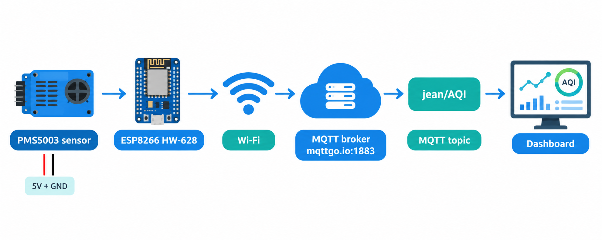
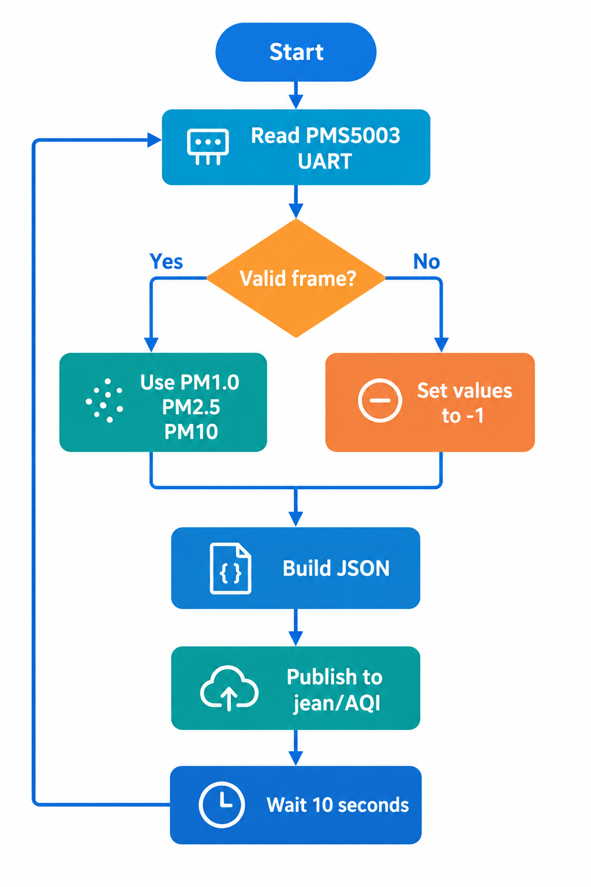
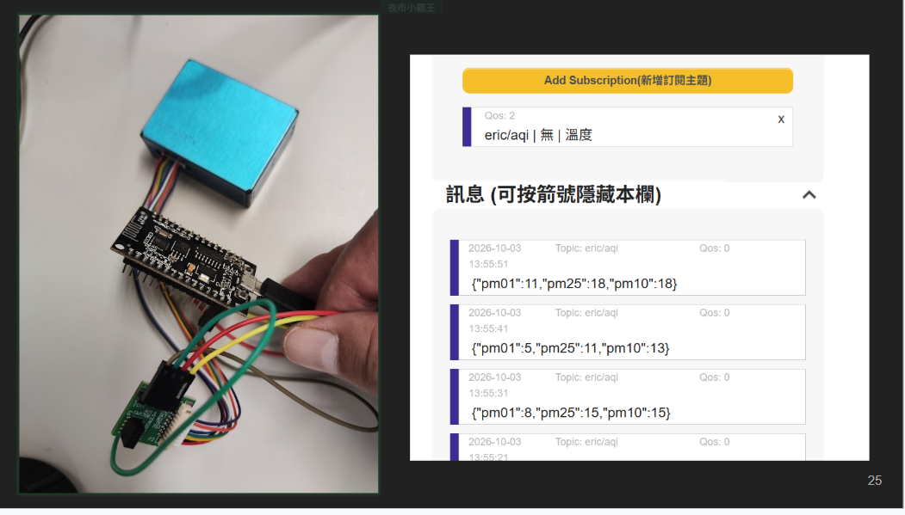
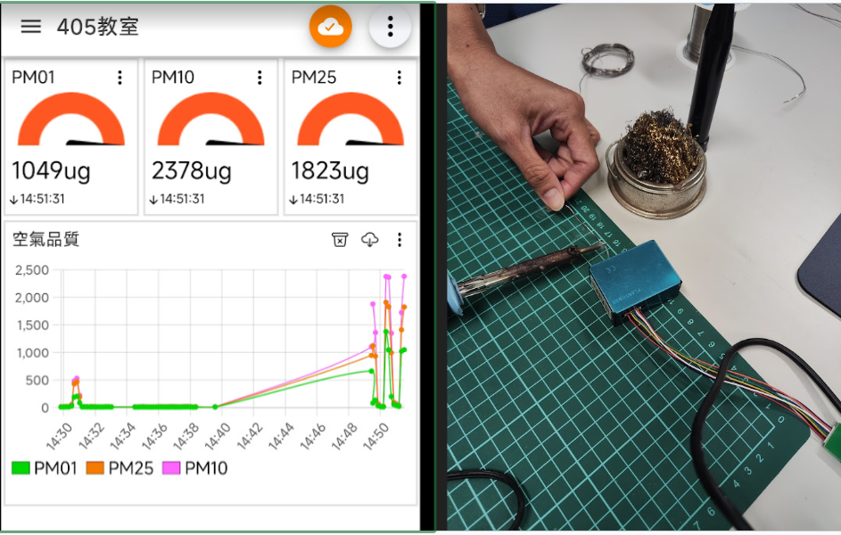
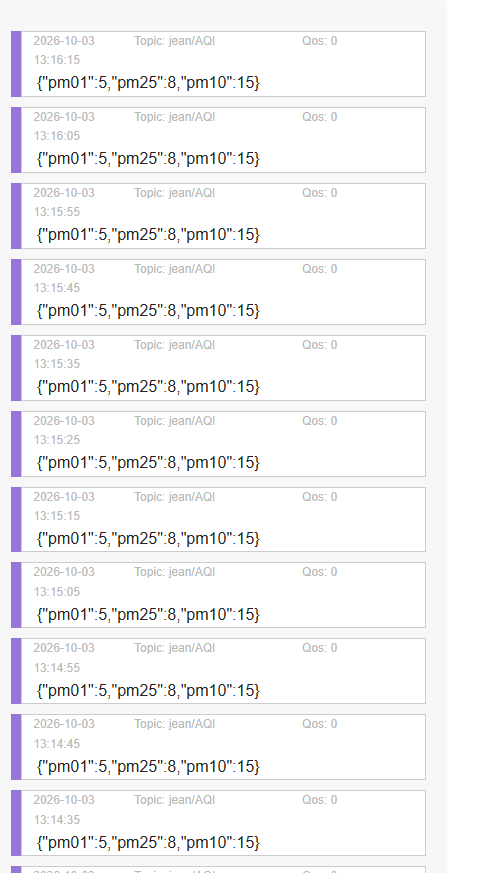

ESP8266 PMS MQTT
HW-628 ESP8266 結合 PMS5003 空氣品質感測器，透過 Wi-Fi 與 MQTT 每 10 秒傳送 PM1.0、PM2.5、PM10 數據。
HW-628 ESP8266 結合 PMS5003 空氣品質感測器，透過 Wi-Fi 與 MQTT 每 10 秒傳送 PM1.0、PM2.5、PM10 數據。


{"pm01": 5, "pm25": 8, "pm10": 15}
若 PMS5003 無法收到有效資料，程式仍會發布：
{"pm01": -1, "pm25": -1, "pm10": -1}


